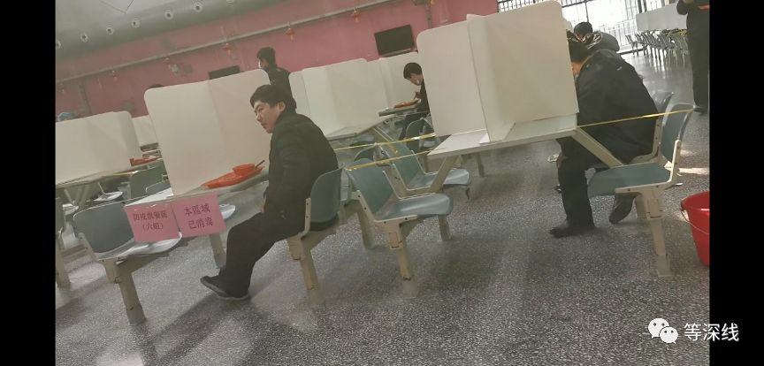
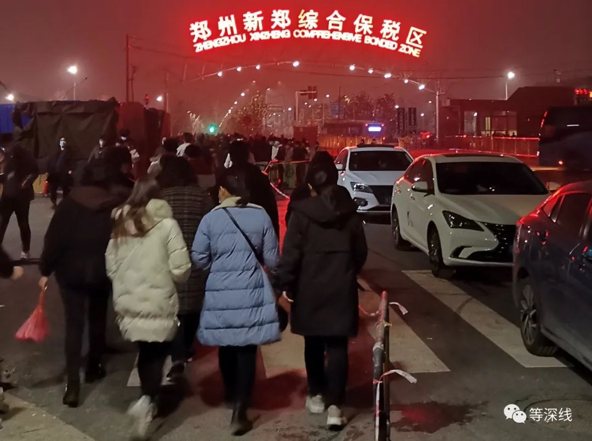
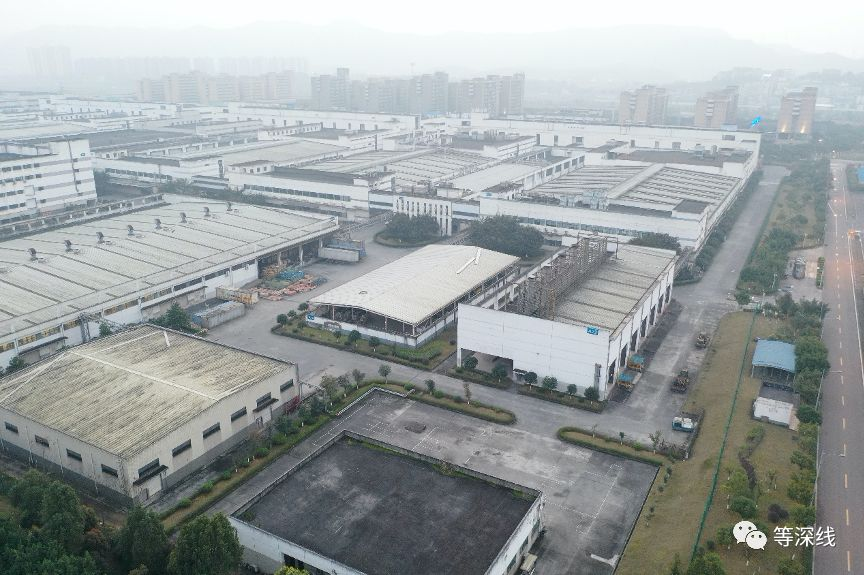

复工不足3万人，郑州富士康入职奖升至7000元
原文链接 备份链接 图片来源：图虫 文：财联社 徐杰 “ 为加大复工力度，郑州富士康再次增加奖励，新入职员工在满足相关条件后可获现金7000元，目前郑州富士康在厂员工已突破2万人，并且不断有新人面试，同时河南省也在动员员工返工。 ” 为加 …
以下文章来源于等深线 ，作者蒋李超程陈郝


中国经营报《等深线》记者 蒋政 李超 程维 陈佳岚 郝嘉奇 郑州、烟台、重庆、太原报道
在富士康工作了10余年的崔永强（化名），直至2月27日，还没有结束今年的春节假期。因为新冠肺炎疫情，按照公司要求，他老家所处的区域，仍未被纳入返岗之序。早前，富士康宣布钟南山出任其防疫复工总顾问。
若在往年，郑州港区富士康周边，早应车水马龙。但《等深线》（ID：depthpaper）记者核实，2月24日，这个占地2000亩、最多拥有过30万名员工的园区里，46个餐厅只开了24个，当天午餐刷卡16423人次。所有人，被要求保持一米距离。
但3天后的27日，郑州富士康有生产线开启了夜班。加快复工节奏的，被认为是早前宣布的“撒钱”措施——在多地，富士康向招聘中介开出5000元至7500元的返费，以及给员工疫情补贴等，以促进招聘。在重庆，政府还会再额外给招工中介2000元返费。招工条件，也出现了“史上首次”突破。
但效果似乎仍待增强。太原富士康人事部门工作人员向记者确认，即使去年辞职离开，现在再次入职，也可以享受出勤90天6000多元的新入职奖励。他称，虽然已经实现日招千人，但缺口仍在。
崔永强可能没有意识到，这是这家全球代工制造业巨无霸，所面临“最难”、“最贵”的一个复工季。在这个复工季中，钱甚至都不是最重要的问题，比钱更重要的是时间和人，而“钱”并不能迅速解决“时间和人”的问题。尽管很多工人，都盼望返岗，尽管很多年轻人，愿意去富士康工作。
年前返工意愿调查高达80%的烟台富士康，也正在面临着尴尬，现在人数刚刚过半。在日本某著名品牌的新订单压力下，已经启动更简单直接的办法——奖金发给那些招来新人的老员工。
总体而言，多种奖励措施下，新增员工多为就近而来，数量并未出现暴增，对于外界分析的订单违约压力，截至记者发稿，富士康方面未作回应。但有所在地政府人员向记者透露，从员工到岗情况看，富士康能否追得上新接订单，是个挑战。这是一个昂贵的“复工季”
而当富士康面对几乎是有史以来“最贵”，也”最难”的一个复工季节时，整个中国制造业应该看到的问题是，除了如富士康一般的大型制造业企业，如此昂贵的复工，是否是任何一家制造业都可以随意承受的？

“最昂贵”的复工
相比于其他企业，富士康旗帜鲜明地表态，要撒钱招人来。且撒钱的形式和对象也足够多样化。2000元到7000元不等的多档金额，总有一款适合新老员工，或者招工中介。
但崔永强暂时拿不到这笔钱。这位老员工在家待得发慌，他准备自驾返回郑州，先自行在家隔离，随时准备上岗，结束自己工作史上最漫长的这个春节假期。
2月21日，“富士康iDPBG郑州普工招募”认证官方公号称，iDPBG （integrated Digital Product Business Group数位产品事业群）2～14级的在职员工，若在2月29日前已上岗出勤，或在2月29日前虽未上岗出勤但返回厂区所在地、且于3月18日前上岗出勤的员工，在职满60天，奖励3250元，在职满90天，再奖2000元。据了解，在此之前，上述员工的返岗激励奖金是3000元每人。

郑州富士康员工正在就餐。 《等深线》记者 蒋政 摄影
与崔永强面临一样处境的富士康老员工还很多。早前，郑州富士康根据河南各区疫情程度，划分出高、一般、低三级风险区，后来划分区域又略有调整。据此，高风险区员工复工需要提供居家隔离14天证明、承诺书与健康证明，一般风险区员工复工需要提供承诺书与健康证明，低风险区提供承诺书后可以直接入职。
崔永强所在的，是河南高风险区。抛开健康证明和隔离，承诺书则要在富士康内部的APP“爱口袋”上签，内容主要是承诺无发烧、无接触武汉人员等。
烟台富士康也在鼓励老员工及时返岗，当地政策是，老员工在2月底之前工作满10天，奖励一个月工资；在2月底之前上班天数在5至10天，奖励半个月工资。
对于来自不同地区的员工，烟台富士康执行不同的隔离政策，从省外返岗在宿舍隔离14天方可上岗，山东省内返岗在宿舍隔离7天方可上岗，烟台市内返岗在宿舍隔离3天后即可上岗。隔离期间，工资照发，有工人笑称“躺着就能挣钱”。
太原富士康iDPBG一名员工也证实，虽然复工有所推迟，但工资是照常发。太原富士康人力部门工作人员告诉记者，2月24日至3月31日期间入职的员工，出勤90天可得到6250元奖金。政策下，每天能招募到1000人左右，但还是不够。
他还透露，太原厂区现有员工7万人左右，截至2月26日已有3万人返岗复工，其余将陆续复工。记者询问，如果去年辞工今年重新进厂，是否属于新员工。他表示这种情况属于新员工，可以得到奖金。
但老员工有限，富士康的用工特点，似乎更需要招新来迅速实现复工。招新，则需要大力依靠中介进行。
一家人力资源企业的张华（化名）告诉《等深线》记者，郑州富士康2月10日开始复工，2月16日开始招人，目前劳务代理从企业拿到的返费已经涨到了7500元，前置条件则是员工入职要满3个月。
按照小时计算，工价为25元/小时，中介抽成2元，工人实得23元/小时，张华认为，这也明显是超出往年的极高标准。一度尴尬的是，按照国务院的要求，2月10日复工前，张华公司所在的大楼还曾被封闭过，如今，张华所在的公司也只复工了一半，业务员均在一线服务，但其他部门人员只是线上复工。
撒钱还在加码，或者说，更大可能是，中介与富士康另有约定，在这个约定下，双方更加追求到岗数量的迅速增长和人员的相对稳定。

2月29日19时，郑州港区富士康的员工开始上夜班，该厂区位于郑州新郑综合保税区内。 《等深线》记者 蒋政 摄影
信广达人力资源服务有限公司面对员工的招募政策显示，港区富士康IDPBG事业群2月21日一次性返费政策是打卡满55天，在职大于90天可以得到6000元返费。
到了2月28日，该公司招募政策分为两种模式：模式一为员工一次性返费7000元，打卡满35天，且在职大于60天发放3300元，打卡满55天，且在职大于90天再发放3700元。模式二为小时工模式，合计每小时23元，每月7日发工资。撒钱的数额明显增长了。
但这样的返费，远不是最高，一家为某知名电脑生产商招工的中介信息显示，返费高达15000元，且特别强调工人做工时都是坐着的。而中介行业人士称，现在更高的返费是17000元！
一位人力资源有限公司负责人向《等深线》记者表示，他所在的区域，若向郑州富士康输送派遣工，员工在职满90天、打卡满55天，即可获得派遣费（返费）7000元。“各区域派遣费还稍有不同，但上下也就差个200块钱左右。相对来讲，这个派遣费算是比较高的。”
此时，似乎依靠人口大省建厂的优势开始凸显。但烟台富士康可没有这么乐观，抛开给中介的返费，为了鼓励老员工推荐新员工，奖励已经从800元涨到1600元，目前的最高奖励则是2200元。
同样，郑州港区富士康也有类似奖励。郑州富士康的一份内部文件显示，返岗出勤者，除了正常薪资及加班费，同时享有出勤激励奖金60元每人每天。因故无法返岗者，可优先安排年休假，不足可安排专案事假。
在郑州富士康，前述官方公号提到，通过自荐、离职返聘、内部推荐等渠道入职的新员工，只要满足在职满90天，最高均可获得5250元的奖励。
“中介自己有的都难以完全复工，依靠中介，可能真不如依靠老员工，他能回来上班，他就能带人来，这是一个更实际的办法，尤其在更重视乡土、传统的中原地区。”2月29日，北京某人力资源负责人告诉《等深线》记者。
该负责人进一步确认，北上广深部分中介获得返费高达17000元是真实存在的，但中介招新的速度，与返费很难说成正比。“春节期间，你看到的还是一个传统、乡土，甚至保守的社会，中介的作用有限，不要高估了。尤其是在大家究竟怎么看疫情问题上。”
当然，烟台富士康还给入职新员工第一个月200元奖励，此外，截至今年5月底新入职员工享受餐补（每天12元）。
“最难”的返岗
是什么推高了富士康复工的“代价”，在最简单的供求关系里便可以找到答案。《等深线》记者在多地采访的情况表明，推高富士康“复工人力资源价格”的，恰恰是上岗劳动力的相对匮乏，而这就与新冠肺炎疫情以来，一系列的防控手段有关，这其中既包括对劳动力流动的限制，也包括对开工条件的要求而导致的承接人力资源硬件能力带来的限制。
记者了解到，至少在当下，日招千人，已经是富士康能拿出的较好成绩了。如果想要更多人，似乎与金钱无关，而是需要时间。
已经入职的郑州富士康员工张青林（化名）告诉《等深线》记者，员工隔离期间，一间宿舍住一个人。现在宿舍不够了，疫情防控政策调整前，就不再让需要隔离的员工返岗了。
疫情防控的空间还在持续调整。《等深线》记者获悉，最新调整后的区域划分，河南高风险区由之前的包括郑州在内的16个市、县（省直管县）下辖的53个区、县，调整为：7个市、县（省直管县）下辖的14个区、县的员工不能返岗。
《等深线》记者核实，在2月24日，共有46个餐厅的郑州港区富士康，开业24个餐厅，当日午餐刷卡16423人次，为先行隔离区人员送餐6734人次。
需要注意的是，因特殊时期餐厅就餐流程烦琐，有大量员工选择自行解决午餐。另有知情人士透露，郑州富士康在厂区周边地区，近日新招募人数有六七千人左右。这与烟台富士康招新人数接近——日招千人。
2月27日，在中板检查工作的张丽丽告诉《等深线》记者，这一天，郑州港区富士康她所在的生产线开启夜班，夜班的工作时间大致分为两种。一种是19﹕30～04﹕30，如果加班，就延长至06﹕30。另一种是20﹕00～05﹕00，如果加班，延长至早07﹕00。
“其实我早回到烟台了，但是因为有孩子，去上班就要住到单位，虽然奖励诱惑很大，为了安全和孩子，我并没有第一时间去上班。”烟台富士康一位不愿具名的老员工称。足见，政策之外，员工究竟如何权衡这些奖励，也是重要因素。
当然，即使你很愿意返岗，实际情况的限制也不少。河南省洛阳市宜阳县相关人士提到，当地组织外出务工人员返岗时，除了一路体温检测和消毒，大巴内被要求隔位入座，客座率只能控制50%以内。“我们这里一个镇上组织的大巴，车后两排还设置了应急区域，就是为了应对途中有人员出现不适症状，可做隔离观察。”
“烟台富士康通过自己开发的系统软件显示，年前在岗员工的返岗意愿为80%以上，但有相当一部分因为各种原因还未返厂，现在（2月27日）返厂人数过万人。”烟台当地政府人士透露，“但是最近接到了某知名品牌电子产品新订单，如果根据订单（所有订单）生产总共用工人数超过3万人，因此目前缺口较大。”
优先策略
在人力资源昂贵，甚至仍不能得到彻底解决的时候，在有限的人工和产能之间，优先哪些订单，便是富士康需要选择的问题。这关乎到这家全球代工制造业巨无霸的业务结构，以及未来的命运。
崔永强估算，河南省内因地处疫区困在家中不能返岗的老员工，人数比例应在总员工的35%左右。“郑州港区富士康员工高峰期有30万人左右，平时也至少有15万人。”
《等深线》记者核实，郑州港区富士康在2月25日和26日，午餐刷卡数量从24日的16423人次，分别升至20800人次和23009人次。这一数字，与隔离结束后方返岗储量“释放”有关，也与各个条线开动机器有关。
崔永强透露，目前复工的员工，是按照各个生产线上的不同工序复工。“好比有50个工序，按生产顺序不同，按需求按比例慢慢来复工。但复工的都是非疫区的人。”
实际操作过程中，不可控因素仍然存在。员工返岗后调岗的情况并不少见。一位年前入职一个月的员工，在2月25日复工入职后，被通知在工作岗位上进行了调整，具体工作内容还待定。
更多的人力资源向制造环节倾斜。张青林所在的小组被安排支援手机制造组装。“现在员工都是优先制造安排。”他说。
同时，手机制造组装岗位的工作时间也更加长一些。张青林告诉《等深线》记者，制造环节的员工目前是每天正常上班8个小时，再加班3个小时，连着上13天后可以休息一天。
目前，富士康科技集团在郑州有3个厂区，分别是郑州航空港厂区、经开区厂区、中牟县厂区。港区富士康规模最大。2019年，河南省手机出口2183.1亿元，是当地第一大出口单项商品。其中，大部分是从港区富士康厂区流出。
对于公司业务是否会受影响，崔永强似乎信心十足。他认为，即使往年，春节后也属于产能低落期，并且都有库存。只要条件允许，产能扩充很快。以目前的情况来看，只要人到位，10天内就能轻松达到高峰期产能。
但关键依然是人，尤其是分布在具体生产环节上的人。重庆富士康的几位工人告诉《等深线》记者，该厂已于2月24日开始分批接工人返厂，不过，因为人员仍未到位等原因，已经返厂的工人虽在上班，但“暂时没有事情做，耍”。

富士康在渝工厂位于重庆西永综合保税区内，下班时间，门口进出人员稀少。 《等深线》记者 程维 摄影
除了钱，招聘的条件也在进一步放开。
在张华的印象里，原来郑州富士康都不开小时工的，张华告诉记者，2019年底才开始招小时工，原因是年底属于产能旺季人难招，才开了小时工，那时候员工小时工21元/小时，现在工时一下子都涨到了23元/小时。张华认为，疫情之下，供需不足，工厂薪资提高了，但这也是特殊时期下的正常情况。

在2月25日时下班时分，持续20分钟航拍中，富士康重庆厂区内，罕有人员走动及车辆移动。 《等深线》记者 程维 摄影
相比于中原地区的返工动力，建厂时宣传将拥有6万名员工的重庆富士康，显得体量较小，且由于主要生产笔记本电脑，其复工节奏似乎更加沉稳一些。2月25日傍晚，一位返工工人告诉《等深线》记者，富士康在渝工厂采用了分期分批返厂的方式，先接回附近的工人，再接相对较远的工人。
这位重庆富士康的工人透露，2月24日返厂的工人为30人，25日返厂1300人。该工厂春节前正常开工的工人数量为11000人左右。2010年5月投产的重庆富士康，拥有年产2000万台笔记本电脑及配件的产能。
“从产业上说，电子时代的手机，更像快消品，市场的高需求，决定了违约风险极大。而笔记本电脑，市场需求决定了其违约风险小很多。如果你能够把富士康当前复工程度做个排行，你放心，肯定和市场需求度完全一致。”北京某知名笔记本电脑厂商销售条线负责人告诉《等深线》记者。
作为全球最大的代工厂，近年来，随着人力成本的提高，代工利润逐渐稀薄一直是鸿海集团（富士康母公司）的心病。此外，随着智能手机市场增速不断下滑，鸿海的主营业务手机代工业务不断承压，鸿海也希望将这家iPhone代工厂转变成一家多元化的公司。
从2002年开始，鸿海一直谋求业务转型，包括联合IBM进军环保和云计算，进入医疗市场、收购夏普面板、进军存储芯片市场等一系列动作。尽管如此，为苹果代工仍是富士康（鸿海子公司）的重要一块业务。苹果订单在富士康集团业绩中占到相当大的比重。
天风证券分析师郭明錤透露，受此次疫情影响，苹果已经下调2020年第一季度iPhone的出货量，下调额大约为10%，苹果2020年第一季度iPhone出货量将仅为3600万～4000万部。
此前有报道指出，富士康董事长刘扬伟在回应鸿海集团是否会下调今年的销售额时表示：“鉴于当前的市场状况，预计2020年销售额将增长1%～3%。”这一数字低于其1月22日预测的3%～5%，也低于分析师们此前平均预测的5.4%。
不过，对于上述信息，富士康相关人士2月5日向记者发来的回应称：“目前（鸿海）公司并未正式对外提供财测数字。”
记者从台湾证券交易所网站获悉，2月20日，鸿海发布公告称，公司一向不评论市场对集团营运的评估报告，也未曾对外发布季度财测数字。并表示，受新冠肺炎疫情影响，本公司在保护员工安全为第一优先、复工流程合法合规的原则下，中国大陆主要厂区的复工进度会较为谨慎，对于全年营收确实会有负面影响。海外厂区部分，包括越南、印度、墨西哥等地营运仍持续满载，部分扩产计划也正常进行中，整体详细状况将待情况明朗后对外说明。
“请你保持一米距离”
然而，在当下，富士康面临的第一大问题，仍然是防疫。如果出现问题，便会让昂贵的复工，更加昂贵。
据富士康科技集团2月25日消息，钟南山已经担任集团新冠肺炎防疫及复工总顾问。
尚不知钟南山给了富士康什么建议。“间隔一米以上”，成为了郑州、烟台富士康厂区及周边出现频度极高的一句话。《等深线》记者在郑州富士康招募中心看到，老员工在此排队办理入职手续，几位员工短暂扎堆聊天，遭到现场工作人员的呵斥。
此外，入职排队、就餐排队、乘坐班车排队、进入宿舍消毒排队，均需间隔一米以上。防护物资成为稀缺品。张青林告诉《等深线》记者，正常上班后，厂区每天会给员工发一个口罩，宿舍里面也有消毒液。
郑州港区富士康厂区与宿舍并不在一起，较大的几个宿舍跟园区有一定距离。有班车可将员工直接从厂区带回宿舍。不过，仍有部分员工选择自己步行返回宿舍。途中需经过多个生活区。目前，郑州富士康的所有宿舍均已封闭，进入需持有证件，测量体温且经过多次消毒。
就餐环节的防疫更为复杂。2月25日，河南省委书记王国生前往富士康调研，特意走访了餐厅。《等深线》记者发现，工人从生产车间出来，走过一个约100米的廊道，进入餐厅区域。在餐厅门入口，地面用隔离线划出一个走道，员工之间间隔一米以上，在上述走道排队就餐。
知情人士透露，目前郑州富士康园区实行错峰就餐，不允许员工自行就餐。每20人组成一个小组，该小组统一就餐，然后统一离开。每一批次就餐离开，都会有人对桌面进行一次消毒，再用清水清洗，然后下一批次就餐员工才能入座。
近日烟台富士康餐厅内景。 图片来自网络
烟台、郑州的富士康，餐桌上，均新增了类似办公区的格挡板。
员工返岗后的生活较往常有很大的改变。《等深线》记者于2月24日、25日实地走访，郑州富士康园区周边的餐饮几乎都没开门，只有部分超市、药店正在营业。因特殊时期员工餐厅就餐程序复杂，不愿在此就餐的员工并无太多选择，泡面和火腿几乎成为标配。
有员工介绍：“我们部门一半人员是吃泡面。这几天沃金华联超市（郑州港区富士康园区附近的一个大超市）的泡面、馒头和咸菜已经脱销了。大家都说目前的状态是‘上班富士康，下班康师傅’。”
抛开富士康，政府的支持也随处可见。前期被称赞“硬核”防疫的河南，在复工时，也在给出积极的举措。
洛阳市嵩县人社局副局长王红来在过去的一周，协调当地7批务工人员前往郑州富士康返岗。“我们县去年在郑州富士康工作的人员有5700多人。前7批已经安排440余人返回工作岗位。预计到3月底，我们嵩县的外出务工人员返岗工作能够大致落地。”
2月27日，他告诉《等深线》记者，在同港区富士康沟通后，经郑州市港区人社局协调，富士康安排车辆，前往当地直接将人员拉走。在返岗前，他们需要为务工人员开具多项证明。
据不完全统计，河南濮阳、安阳、漯河、平顶山、洛阳等多地均有类似政策。据河南当地媒体相关报道，2月24日，郑州市交警部门还专门护送富士康员工免费专车，直至富士康园区。
在重庆，政府还针对招工中介开出了奖励：如果中介机构帮富士康、广达等重庆代工厂招到一个工人，当地政府会补贴给中介机构2000多元。中介机构没有透露具体补贴的金额是多少。不过，工人如在该园区各厂内挨个厂轮着上班，将不能获得这一笔补贴，除非换厂中间，有1个月以上的不上班时间。
采访中，各个园区、层级的人员，对记者透露的返岗比例均不同，但多数认为目前远低于往年同期。一位政府工作人员则私下透露，当地富士康刚接了某知名企业游戏机订单，他和同事们认为，在旧有订单压力下，富士康能否供应新增订单，肯定有压力。这个判断，缘于他们连日来对复工人数的观察。
所有人都盼望着疫情形势能有更大好转，那样，复工和产能似乎都不再需要如此焦虑了。但这是一条不好判断的时间距离，无法用员工之间一米的距离去衡量。截至发稿，富士康总部及各厂区均未接受《等深线》记者采访。
（编辑：郝成 校对：颜京宁）

推荐阅读

点击大图 |今天起，30万亿房贷迎来巨变！只有一次的选择，你会怎么选？

点击大图 |重磅！新冠肺炎病毒几乎人人易感！中国-世卫联合报告发布，信息量巨大

原文链接 备份链接 图片来源：图虫 文：财联社 徐杰 “ 为加大复工力度，郑州富士康再次增加奖励，新入职员工在满足相关条件后可获现金7000元，目前郑州富士康在厂员工已突破2万人，并且不断有新人面试，同时河南省也在动员员工返工。 ” 为加 …
原文链接 备份链接 以下文章来源于态度财经见闻 ，作者默默看着你的肥猫 *************************蔷薇 | 整理************************* 孤云 | 编辑 口述：袁先生（浙江一纺织企业老 …
原文链接 备份链接 经济观察网 记者 沈怡然 宋笛 2月20日，刘雨（化名）返岗第一天。 空旷的食堂，暂停的娱乐设施和园区公交车不断提醒他，这是一个和往常截然不同的富士康。 刘雨是工业富联下属公司一名工程师，在深圳龙华厂工作。在刘雨的眼 …
原文链接 备份链接 ***机器再度轰鸣*** 距离温州南站五六公里的瓯海区富泉路上，遍布着各式鞋厂、超市和快餐店。原本熙熙攘攘的街道，如今在疫情的阴影下显得有点冷清。 临近饭点，马路南端一家电子厂的员工走进附近一家快餐店——这个快餐店的 …
原文链接 备份链接 燃财经（ID:rancaijing）原创 作者 | 孟亚娜 编辑 | 凌远川 坐电梯像“吃火锅”，吃饭像“参加高考”，红外线测体温，脚踏式按键开门神器……近日，互联网公司的花式复工火了，网友大呼，太硬核了。 图片来源 …